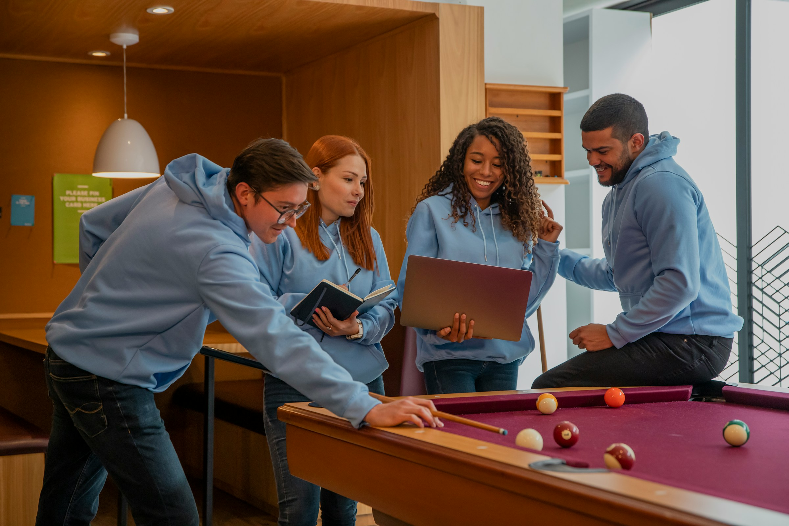

Student Resources
Student Study Collective connects students with academic support services, research tools, and campus spaces designed to help students stay productive and connected throughout the semester.
-
Student Achievement Center
Access tutoring, academic coaching, and student support services designed to help students succeed in their coursework.
-
Writing Center
Receive help with essays, research papers, citations, and other writing assignments from campus writing tutors.
Research & Technology
All students have access to some specific online resources.
-
Online Library
Search academic journals, ebooks, and research databases for class projects and assignments.
-
Tech Lab Daily Guides
Find technology support resources, software guides, and computer lab information for students.

Campus Recreation Area
The recreation area near the cafeteria gives students a place to relax between classes and study sessions. With seating areas, pool tables, and open space to socialize, it is a popular place for students to recharge before returning to coursework.
